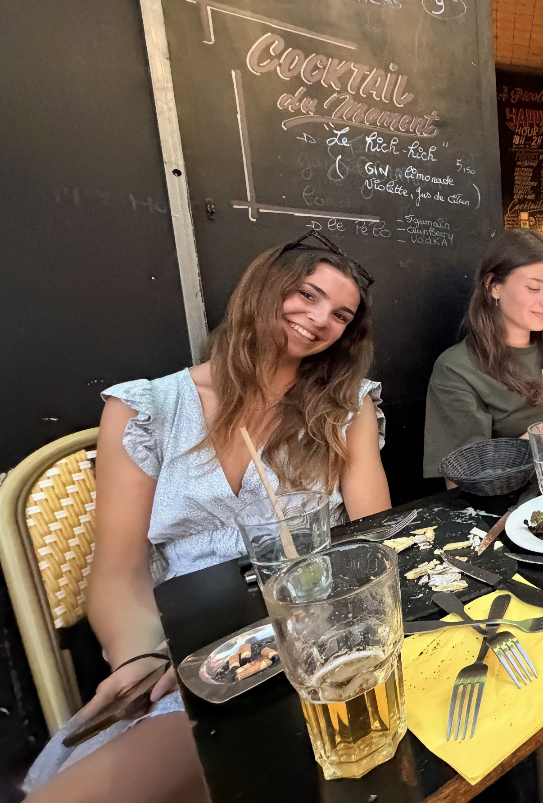

Communication Visuelle
RÉF. CF-ANTALIS • ÉDITION LIMITÉE • 2 ANS DE SERVICE
CORALINE
FOURNIER
Chef de Marché Communication Visuelle.
Spécialiste reconnue des PIU, des SKU et des cafés allongés.
ANTALIS / VISCOM

Coco
PAUSE À 16H00 ?”
•
“PAS LA STATION !”
•
“UN CAFÉ ALLONGÉ S’IL VOUS PLAÎT”
•
“J’AI ENCORE 35 PIU À FAIRE”
•
01 — FICHE TECHNIQUE
Une référence
difficile à remplacer.
Antalis France
Production intensive
Niveau : très sérieux
Création de SKU
100%
PIU
120%
Communication Visuelle
100%
Patience avec les demandes des fournisseurs
50%
Équitation
NIVEAU BOSS
02 — CYCLE DE VIE
Deux ans.
Quelques étapes.
01
ARRIVÉE CHEZ ANTALIS
Installation de la référence Coraline Fournier dans l’équipe Marketing.
02
PREMIER SKU
Découverte de la création de SKU.
03
POV : POITOO ENTRE DANS LA PIECE
Le moment où la production industrielle a officiellement commencé.
04
DES SKUs ! ENCORE DES SKUs !
Coco condamnée à la création de texte sans fin.
05
FIN D’ALTERNANCE
La cavalière retourne au pré.
“
Très bon produit.
Dommage qu’il soit arrêté.
03 — ARCHIVES AUDIO OFFICIEUSES
Les phrases
qui resteront.
04 — PROCHAINE ÉTAPE
Coraline
change d’écurie.
Une référence quitte Antalis.
La cavalière, elle, continue la course.
PARTENAIRE OFFICIEL
DRAKO MAIL
aka Drako 🐎
05 — CONFIGURATEUR
Besoin d’une
Coraline ?
Je veux une Coraline pour…
>
Sélectionnez une configuration.
06 — MERCI CORALINE
Derrière les PIU,
les SKU et les cafés…
il y avait surtout une collègue avec qui on a adoré travailler. Merci pour ces deux années au sein de l’équipe Marketing et pour la bonne humeur apportée à Antalis.
On te souhaite énormément de réussite pour la suite — professionnelle comme équestre.
CORALINE FOURNIER
Cette référence nous manquera.